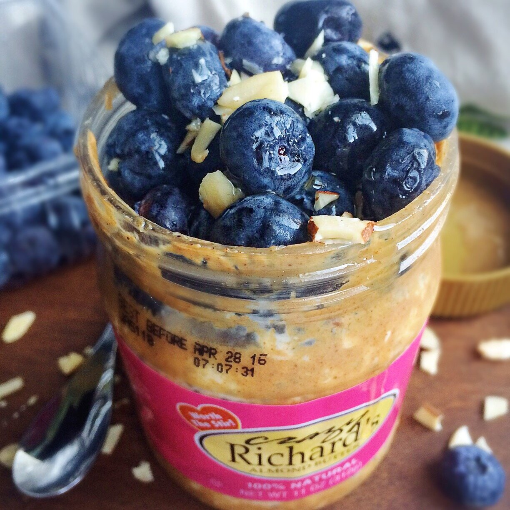

Toffee Overnight Oatmeal (vegan, gluten free)

When you're at the bottom of the almond butter jar and not even mad because you know that means you can fill it with OVERNIGHT OATS. Gotta get eeeevery last drop of almond butter. This is Crazy Richard's almond butter (AKA THE BEST KIND) with toffee overnight oatmeal, blueberries, and almonds!
I gave up overnight oats when I gave up dairy because...even though you could make overnight oatmeal without yogurt, I really don't think it's that great. The yogurt makes it SO creamy and dreamy. Now that I've found a dairy free yogurt that I really enjoy, a lightbulb clicked this week where I remembered OH YEAH HEY I CAN MAKE OVERNIGHT OATS IN A JAR. Best lightbulb moment I've had in a while, for sure. :p
Have you ever made overnight oatmeal? If so, what do you like to put in it? It's pretty versatile! If you haven't, try this toffee overnight oatmeal and let me know how your life has changed!
Toffee Overnight Oatmeal (vegan, gluten free)
Serves: 1
-
1/3 cup raw oats (rolled or instant - use gluten free oats if needed)
-
1/2 TBSP chia seeds
-
1/4 cup dairy free yogurt (I prefer Silk brand)
-
1/4 cup unsweetened almond milk
-
5-7 drops English toffee Stevia drops
Mix all of your ingredients in a bowl! I put mine in a nearly empty almond butter jar so that when I eat it, I can get the last spoonfuls of almond butter out easy! Let thicken in the fridge overnight, then eeeeat.